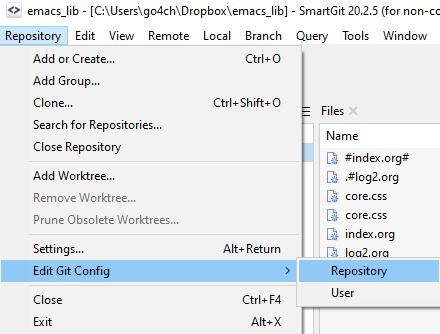

Log
旧的足迹：
./mylife/log_old.html ./mylife/loge.html
03.07.2021
感觉还是很不容易的. 已经离开Emacs好多年了, 在寻找好用的读书笔记的时候, 下定决心重新捡起 EMACS,结 果发现那么多年过去了, 肌肉既然依然存在. 花了一个下午加一个晚上时间就基本搞定了 EMACS Org 的配置.
一直对于 smartGit 的设置很纠结, 每次在 ~/.gitconfig 设置以后, 经常没有效果. Resposity -> Edit Git Config -> Repository 中修改设置.

另外, windows下的 smartGit 喜欢自作聪明把 unix 的回车用 windows 回车替代. 要禁用各种替换可以
[core]
autocrlf = false
04.07.2021
Org中链接其他Org文件时候, 直接写
[[csharp.org][csharp]]
在生成 html 之后, emcas会自动将org改为html.
修改高亮颜色: Org的table中文字显示难以辨认,解决方案就是在相关文字上执行
M-x customize-face
然后选定希望的颜色,点击保存即可.信息会保存到 .sys_custom.el 中. 非常方便!
关于 hunspell , 非常诡异的一些设置. 我到最后也没有完全明白. 不过能用了. 因为没有完全明白, 所以就在日志中稍微说一下.
- 下载 hunspell (1.7.0) https://github.com/mlt/hunspell/releases/download/appveyor_v1.7.0/hunspell-msvc-Release-x64.zip
- 下载词典 https://extensions.libreoffice.org/extensions/english-dictionaries
词典 *.oxt 用 unzip 解压缩, 将里面需要的 en_US.aff, en_US.dic 保存到词典文件夹.
之后设置两个环境变量 第一个是hunspell 所在文件夹, 另一个是词典所在文件夹.
PATH: "C:\Program Files (x86)\ErgoEmacs 1.8.1\hunspell\;%PATH%" DICPATH "C:\Program Files (x86)\ErgoEmacs 1.8.1\hunspell"
在 .emacs 文件中如下定义
(require 'ispell) (setq ispell-program-name "hunspell") (setq ispell-hunspell-dict-paths-alist '( ("default" "C:\\bussiness\\program_misc\\hunspell-msvc-Release-x64\\default.aff") ("en_US" "C:\\bussiness\\program_misc\\hunspell-msvc-Release-x64\\en_US.aff") )) (setq ispell-local-dictionary "en_US") (setq ispell-local-dictionary-alist '(("en_US" "[[:alpha:]]" "[^[:alpha:]]" "[']" nil ("-d" "en_US") nil utf-8)))
非常诡异的一点就是, 我必须将 en_US 复制为 default 文件, 这样 hunspell 才能找到词典. 否则系统不断提示找不到文件. 好像我的 en_US 地址设置都是无效的. 而且就算是这样 hunspell -D 依然没有列举加载的词典.